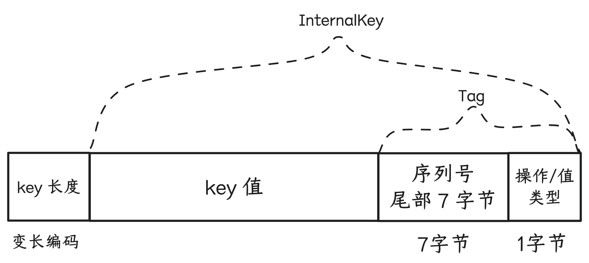
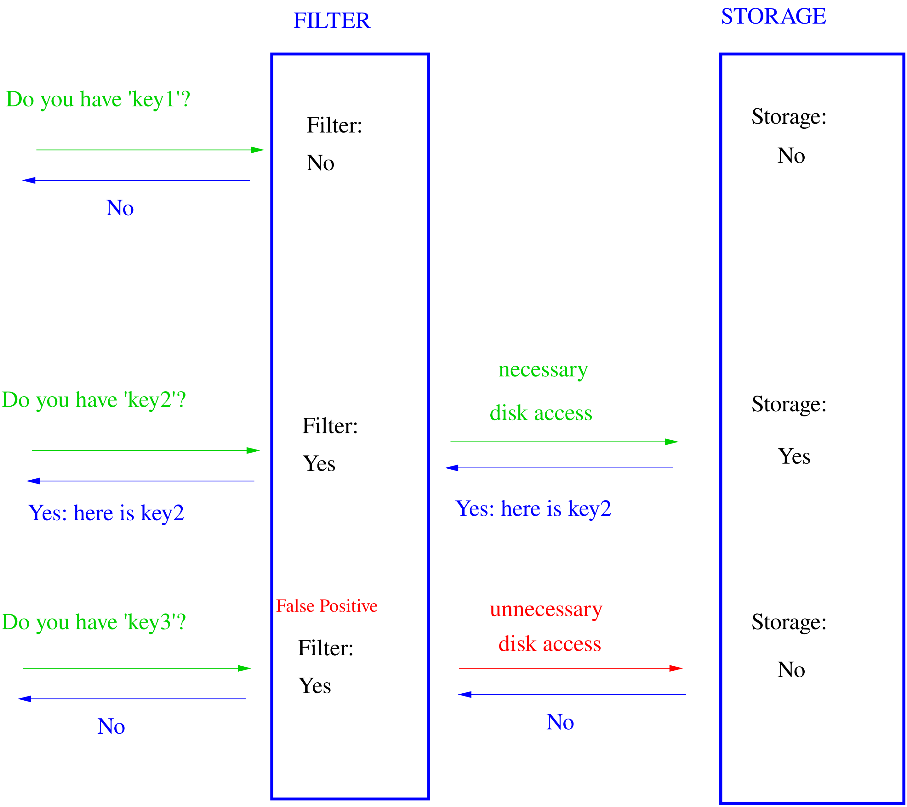

读ç �：LevelDB - å¢�åˆ æ”¹æŸ¥
9ã€�å¢�åˆ æ”¹æŸ¥

9.1 å¢�åˆ æ”¹
对äº� leveldb（lsm-tree å˜å‚¨ç»“æ�„）æ�¥è¯´ï¼Œå¢�改æ“�作统一为 put æ“�作（改也是æ�’入一æ�¡æ–°è®°å½•ï¼‰ï¼Œput æ“�ä½œå’Œåˆ é™¤æ“�作å�ˆç»Ÿä¸€ä¸º write æ“�ä½œï¼ˆåˆ é™¤æ˜¯å€¼ä¸ºç©ºçš„å†™å…¥æ“�作）。write æ“�作过程为
- 1�先将�作记录（包括�始键值）写到 WAL log 文件
- 2ã€�å°†æ“�作记录到内å˜ä¸å�¯å�˜ Memtable 的跳表结æ�„ä¸
写入过程�常简�，所以 leveldb 的写入���以�常高。�过有3个性能调优点�以注�一下：
- 1ã€�写入æ“�作å�¯ä»¥æŒ‡å®šæ˜¯å�Œæ¥çš„（sync）或者异æ¥çš„，这里说的å�Œæ¥å¼‚æ¥æ˜¯é’ˆå¯¹ WAL log 文件写入而言的，需è¦�在å��å��性能和数æ�®ä¸€è‡´æ€§ä¹‹é—´å�šå¥½å¹³è¡¡ï¼š
- 如æ�œå†™å…¥æ“�作指定为å�Œæ¥ï¼Œé‚£ä¹ˆå°†æ“�作记录到 WAL log 文件å��，还è¦�ç¡®ä¿�文件内容æŒ�久化到ç£�盘，这个æŒ�久化æ“�作对 leveldb 的写入å��å��å½±å“�会比较大。
- 如æ�œå†™å…¥æ“�作指定为é��å�Œæ¥ï¼Œé‚£ä¹ˆå¯¹ WAL log 的文件写入，å®�é™…å�ªæ˜¯å†™åˆ°å†…æ ¸çš„æ–‡ä»¶ç¼“å†²åŒºã€‚å¦‚æ�œå†™å…¥æ“�作记录到å�¯å�˜ Memtable 并返å›�写入æˆ�功状æ€�给调用方å��ï¼Œå†…æ ¸ç¼“å†²åŒºå†…å®¹åˆ·å‡ºåˆ°ç£�盘之å‰�，系统 crash 或者机器æ�‰ç”µéƒ½ä¼šå¯¼è‡´å†™å…¥æ•°æ�®ä¸¢å¤±ï¼Œå˜åœ¨å…ˆå†™å��读的一致性问题。
- 2ã€�leveldb çš„å®�ç�°ä¸ï¼Œå�¯å�˜ Memtable 对象和ä¸�å�¯å�˜ Memtable 对象å�‡å�ªæœ‰ä¸€ä¸ªï¼Œå¹¶ä¸” Memtable 对象的内å˜å� 用å˜åœ¨ä¸Šé™�阈值，一旦å�¯å�˜ Memtable 写满且ä¸�å�¯å�˜ Memtable 还å˜åœ¨ï¼ˆè¿˜æ²¡æ�¥å¾—å�Š minor compaction æˆ� $level_0$ æ•°æ�®æ–‡ä»¶ï¼‰ï¼Œé‚£ä¹ˆå†™å…¥å°±ä¼šè¢«é˜»å¡�（详情è§�[[## 2ã€�写入缓冲ä¸�攒批]] 部分解说），那么：
- å�¯ä»¥é€‚当调大 Memtable 内å˜å� 用的上é™�阈值，但也ä¸�èƒ½è°ƒå¾—å¾ˆå¤§ï¼Œå› ä¸ºè¿™ä¼šå¯¼è‡´ compaction å�‹åŠ›ä¼šæ¯”较大，间æ�¥å½±å“�读/检索的性能：
- 如æ�œ $level_0$ 文件很多，æ�¥ä¸�å�Š major compaction，而这些文件的 key 区间å�ˆå˜åœ¨é‡�å�ˆï¼Œå°±å�¯èƒ½éœ€è¦�检索多个 $level_0$ 文件。
- major compaction 涉�较多的文件�盘 I/O，�而�能影�检索时的文件读�。
- �“ä¸�å�¯å�˜ Memtable 对象å�‡å�ªæœ‰ä¸€ä¸ªâ€� 如æ�œè°ƒæ•´ leveldb å®�ç�°æ”¯æŒ�å˜åœ¨å¤šä¸ª ä¸�å�¯å�˜ Memtable 对象，å�¯èƒ½å˜åœ¨ä¼˜åŒ–空间；compaction ç›®å‰�是å�•çº¿ç¨‹å¤„ç�†çš„，如æ�œè°ƒæ•´æˆ�æŸ�ç§�多线程å®�ç�°ï¼Œå�¯èƒ½ä¹Ÿå˜åœ¨ä¼˜åŒ–空间，ä¸�过å®�ç�°èµ·æ�¥åº”该è¦�å¤�æ�‚得多，并且ç£�盘 I/O 也容易æˆ�ä¸ºæ£€ç´¢æ€§èƒ½é€€åŒ–çš„å› ç´ ã€‚
- å�¯ä»¥é€‚当调大 Memtable 内å˜å� 用的上é™�阈值，但也ä¸�èƒ½è°ƒå¾—å¾ˆå¤§ï¼Œå› ä¸ºè¿™ä¼šå¯¼è‡´ compaction å�‹åŠ›ä¼šæ¯”较大，间æ�¥å½±å“�读/检索的性能：
图片摘自《The Linux Programming Interface》一书 244 页。
对äº� WAL log é��å�Œæ¥å†™å…¥ï¼Œleveldb 会将内容先写到一å�—用户æ€�内å˜ç¼“冲区ä¸ï¼Œå¦‚æ�œç¼“冲区满，则先调用
write系统调用将用户æ€�ç¼“å†²åŒºå†…å®¹å†™åˆ°å†…æ ¸ç¼“å†²åŒºï¼ˆKernel buffer cache），将内容的剩余部分继ç»å†™åˆ°ç”¨æˆ·æ€�内å˜ç¼“冲区å��，就返å›�；如æ�œæ˜¯å�Œæ¥å†™å…¥ï¼Œåˆ™ä¼šå†�将用户æ€�缓冲区内容
writeåˆ°å†…æ ¸ç¼“å†²åŒºå��，å†�调用fsyncç³»ç»Ÿè°ƒç”¨ï¼Œå°†å†…æ ¸ç¼“å†²åŒºå†…å®¹åˆ·åˆ°ç£�盘。
9.2 查/范围扫�
9.2.1 å¿«ç…§/snapshot
leveldb ä¸æ¯�个 Put/Delete æ“�作都被分é…�了一个åº�列å�·ï¼ˆSequenceNum），这个åº�列å�·æ˜¯ä¸€ç§�“Lamport 时钟â€� 或者说 “逻辑时间戳â€�。
leveldb 支æŒ�对数æ�®åº“å�šä¸€ä¸ªå¿«ç…§ï¼Œè¿™ä¸ªå¿«ç…§æ“�作é��常轻é‡� - 就是最新分é…�分é…�åº�列å�·ï¼ˆLastSequence）。这个快照的å�«ä¹‰ï¼šåº�列å�·å°�äº�ç‰äº�LastSequenceçš„æ“�作都å±�äº�这个快照的，大äº� LastSequence çš„æ“�作则ä¸�å±�äº�这个快照，是在这个快照å�‘生之å��å�‘生的。
const Snapshot* DBImpl::GetSnapshot() {
MutexLock l(&mutex_);
return snapshots_.New(versions_->LastSequence());
}
// Abstract handle to particular state of a DB.
// A Snapshot is an immutable object and can therefore be safely
// accessed from multiple threads without any external synchronization.
class LEVELDB_EXPORT Snapshot {
protected:
virtual ~Snapshot();
};
// Snapshots are kept in a doubly-linked list in the DB.
// Each SnapshotImpl corresponds to a particular sequence number.
class SnapshotImpl : public Snapshot {
public:
SnapshotImpl(SequenceNumber sequence_number)
: sequence_number_(sequence_number) {}
SequenceNumber sequence_number() const { return sequence_number_; }
private:
// SnapshotImpl is kept in a doubly-linked circular list. The SnapshotList
// implementation operates on the next/previous fields directly. SnapshotImpl* prev_;
SnapshotImpl* next_;
const SequenceNumber sequence_number_;
};DBImpl 对象的 snapshots_ å—段上维护ç�€å¿«ç…§çš„链表，是é�¿å…� compaction 过程清除æ�‰äº†å¿«ç…§ä¾�赖的键值数æ�®ã€‚比如，å�‡è®¾ä¸€æ¬¡å¿«ç…§çš„åº�列å�·ä¸º 123456，对äº� UK å˜åœ¨åº�列å�· 123455 å’Œ åº�列å�· 123457 两次æ“�作，对äº�这次快照而言，åº�列å�· 123457 çš„æ“�作是ä¸�å�¯è§�的，这个快照å˜åœ¨æœŸé—´çš„ compaction 过程都需è¦�å�Œæ—¶ä¿�ç•™ UK 的这两次æ“�作。这个快照释放之å��，compaction å°±å�¯ä»¥æŠŠåº�列å�· 123455 çš„æ“�作清除æ�‰ã€‚
å› æ¤ï¼Œå¿«ç…§æœ¬èº«è™½ç„¶å¾ˆè½»é‡�，ä¸�过如æ�œé•¿æ—¶é—´ä¸�释放，会导致ç£�盘空间å� 用膨胀，对检索性能也会有一定的影å“�。
9.2.2 点查
指定 key 进行点查的逻辑顺�为：
- 1ã€�ä»�å�¯å�˜ Memtable 的跳表ä¸æŸ¥æ‰¾ï¼Œå¦‚æ�œæ‰¾åˆ°å°±è¿”å›�给调用方（如æ�œæ‰¾åˆ°çš„是é��åˆ é™¤è®°å½•ï¼Œåˆ™è¿”å›�åº�列å�·æœ€å¤§çš„那个记录的值，且返å›�状æ€�为默认值“找到â€�，如æ�œæ‰¾åˆ°çš„æ˜¯åˆ é™¤è®°å½•ï¼Œåˆ™ä¿�留返å›�值为空，返å›�状æ€�为“未找到â€�）
- 2ã€�1 ä¸æ²¡æ‰¾åˆ°ï¼Œåˆ™ç»§ç»ä»�ä¸�å�¯å�˜ Memtable 的跳表ä¸æŸ¥æ‰¾ï¼Œå¦‚æ�œæ‰¾åˆ°å°±è¿”å›�给调用方
- 2ã€�2 ä¸æ²¡æ‰¾åˆ°ï¼Œåˆ™ä»� $level_0$ 开始ä¾�次é€�层在数æ�®æ–‡ä»¶ä¸æŸ¥æ‰¾ï¼Œ
- å› ä¸º $level_0$ æ•°æ�®æ–‡ä»¶çš„ key 区间å�¯ä»¥å˜åœ¨é‡�å�ˆï¼Œæ‰€ä»¥åœ¨ $level_0$ 层检索å�¯èƒ½ä¼šæ¶‰å�Šå¤šä¸ªæ•°æ�®æ–‡ä»¶
- $level_1$~$level_n$ æ•°æ�®æ–‡ä»¶çš„ key 区间ä¸�会é‡�å�ˆï¼Œæ‰€ä»¥æ ¹æ�®æœ€æ–°ç‰ˆæœ¬ç»´æŠ¤çš„对应层数æ�®æ–‡ä»¶å…ƒä¿¡æ�¯åˆ—è¡¨æ‰¾åˆ°ç›®æ ‡æ•°æ�®æ–‡ä»¶å�³å�¯ï¼Œå¦‚æ�œæ²¡æ‰¾åˆ°ï¼Œåˆ™åˆ°ä¸‹ä¸€å±‚继ç»æ£€ç´¢
- æ‰¾åˆ°ç›®æ ‡æ•°æ�®æ–‡ä»¶å��，先对索引å�—äºŒåˆ†æŸ¥æ‰¾æ‰¾åˆ°ç›®æ ‡æ•°æ�®å�—，如æ�œç›®æ ‡æ•°æ�®è¡¨æ˜¯ç»�过å�‹ç¼©çš„，则需è¦�å…ˆç»�过解å�‹ï¼Œç„¶å��æ ¹æ�®æ•°æ�®å�—ä¸çš„é‡�ç½®ä½�点列表信æ�¯ï¼Œä¾�次进行 delta 解ç �é��å�†
点查æ“�作，å�¯ä»¥æŒ‡å®šä¸€ä¸ªä¹‹å‰�è�·å�–的快照信æ�¯ï¼Œå¦‚æ�œæ²¡æœ‰æŒ‡å®šï¼Œåˆ™é»˜è®¤ä½¿ç”¨æœ€æ–°åˆ†é…�çš„åº�列å�·ä½œä¸ºå¿«ç…§ï¼Œå®�际查找过程会将快照ä¸çš„åº�列å�·å’Œå˜å‚¨è®°å½•ä¸çš„åº�列å�·è¿›è¡Œæ¯”较，åº�列å�·å¤§äº�å¿«ç…§åº�列å�·çš„记录都会被忽略。
查找键（LookupKey）的编ç �æ–¹å¼�：
ä¸� Memtable ä¸è·³è¡¨èŠ‚点ä¸çš„ Key çš„ç¼–ç �的区别仅在äº�ä¸�包å�« value 的长度和 value 值。
// A helper class useful for DBImpl::Get()
class LookupKey {
public:
// Initialize *this for looking up user_key at a snapshot with
// the specified sequence number.
LookupKey(const Slice& user_key, SequenceNumber sequence);
// Return a key suitable for lookup in a MemTable.
Slice memtable_key() const { return Slice(start_, end_ - start_); }
// Return an internal key (suitable for passing to an internal iterator)
Slice internal_key() const { return Slice(kstart_, end_ - kstart_); }
// Return the user key
Slice user_key() const { return Slice(kstart_, end_ - kstart_ - 8); }
private:
// We construct a char array of the form:
// klength varint32 <-- start_
// userkey char[klength] <-- kstart_
// tag uint64
// <-- end_
// The array is a suitable MemTable key.
// The suffix starting with "userkey" can be used as an InternalKey.
const char* start_;
const char* kstart_;
const char* end_;
char space_[200]; // Avoid allocation for short keys
}
LookupKey::LookupKey(const Slice& user_key, SequenceNumber s) {
size_t usize = user_key.size();
size_t needed = usize + 13; // A conservative estimate
char* dst;
if (needed <= sizeof(space_)) {
dst = space_;
} else {
dst = new char[needed];
}
start_ = dst;
dst = EncodeVarint32(dst, usize + 8);
kstart_ = dst;
std::memcpy(dst, user_key.data(), usize);
dst += usize;
EncodeFixed64(dst, PackSequenceAndType(s, kValueTypeForSeek));
dst += 8;
end_ = dst;
}
static uint64_t PackSequenceAndType(uint64_t seq, ValueType t) {
assert(seq <= kMaxSequenceNumber);
assert(t <= kValueTypeForSeek);
return (seq << 8) | t;
}9.2.3 全库/范围有�扫�（��）
class DB {
public:
// Return a heap-allocated iterator over the contents of the database.
// The result of NewIterator() is initially invalid (caller must
// call one of the Seek methods on the iterator before using it).
//
// Caller should delete the iterator when it is no longer needed.
// The returned iterator should be deleted before this db is deleted.
virtual Iterator* NewIterator(const ReadOptions& options) = 0; // ��
}
// ��
Iterator* DBImpl::NewIterator(const ReadOptions& options) {
SequenceNumber latest_snapshot;
uint32_t seed;
Iterator* iter = NewInternalIterator(options, &latest_snapshot, &seed);
return NewDBIterator(this, user_comparator(), iter,
(options.snapshot != nullptr
? static_cast<const SnapshotImpl*>(options.snapshot)
->sequence_number()
: latest_snapshot),
seed);
}
// è¿ä»£å™¨æ�¥å�£å®šä¹‰
class Iterator {
public:
// An iterator is either positioned at a key/value pair, or
// not valid. This method returns true iff the iterator is valid.
virtual bool Valid() const = 0;
// Position at the first key in the source. The iterator is Valid()
// after this call iff the source is not empty.
virtual void SeekToFirst() = 0;
// Position at the last key in the source. The iterator is
// Valid() after this call iff the source is not empty.
virtual void SeekToLast() = 0;
// Position at the first key in the source that is at or past target.
// The iterator is Valid() after this call iff the source contains
// an entry that comes at or past target.
virtual void Seek(const Slice& target) = 0;
// Moves to the next entry in the source. After this call, Valid() is
// true iff the iterator was not positioned at the last entry in the source.
// REQUIRES: Valid()
virtual void Next() = 0;
// Moves to the previous entry in the source. After this call, Valid() is
// true iff the iterator was not positioned at the first entry in source.
// REQUIRES: Valid()
virtual void Prev() = 0;
// Return the key for the current entry. The underlying storage for
// the returned slice is valid only until the next modification of
// the iterator.
// REQUIRES: Valid()
virtual Slice key() const = 0;
// Return the value for the current entry. The underlying storage for
// the returned slice is valid only until the next modification of
// the iterator.
// REQUIRES: Valid()
virtual Slice value() const = 0;
}有�����的使用方�为：
- 1ã€�调用 NewIterator æ�¥å�£è�·å¾—è¿ä»£å™¨å¯¹è±¡æŒ‡é’ˆ -
Iterator* iter，optionså�‚æ•°ä¸å�¯ä»¥æŒ‡å®šå¿«ç…§ï¼Œå¦‚æ�œæœªæŒ‡å®šï¼Œåˆ™é»˜è®¤ä»¥æœ€æ–°åˆ†é…�çš„åº�列å�·ä¸ºå¿«ç…§ã€‚ - 2ã€�调用 è¿ä»£å™¨å¯¹è±¡æŒ‡é’ˆ çš„ Seek 相关æ�¥å�£ï¼Œåˆ�始化é��å�†èµ·å§‹ä½�置状æ€�：
- SeekToFirst：ä¸�指定起始 key，ä»�头部顺åº�é��å�†ï¼ˆä¸�æ–调用 Next）
- SeekToLast：ä¸�指定起始 key，ä»�尾部逆åº�é��å�†ï¼ˆä¸�æ–调用 Prev）
- Seek：指定起始 key，ä»�起始 key 开始顺åº�é��å�†ï¼ˆä¸�æ–调用 Next）
- 3ã€�è°ƒç”¨æ–¹æ ¹æ�®è¿ä»£å™¨çš„
Valid()方法返å›�判æ–是å�¦é��å�†ç»“æ�Ÿï¼Œæˆ–è€…æ ¹æ�®æœ€æ–°é��å�†åˆ°çš„ key 值å�šåˆ¤æ–是å�¦è¦�结æ�Ÿé��å�†ã€‚
有�（顺�）��的��逻辑类似� compaction 过程的 N 路归并算法，��过 compaction 涉�的 level 层 和 level+1 层输入数�文件的 N 路归并��，而有���则涵盖“�� memtable�/“��� memtable�/“$level_0$~$level_n$ 所有层数�文件�数�库完整状�：
- 1ã€�先针对å�„部分数æ�®åˆ›å»ºå�„自的è¿ä»£å™¨ï¼š
- “å�¯å�˜ memtableâ€� 一个è¿ä»£å™¨
- “ä¸�å�¯å�˜ memtableâ€� 一个è¿ä»£å™¨
- $level_0$ å±‚ï¼Œå› ä¸ºä¸�å�Œæ–‡ä»¶çš„ key 区间å�¯èƒ½ä¼šé‡�å�ˆï¼Œæ‰€ä»¥ä¸€ä¸ªæ–‡ä»¶ä¸€ä¸ªè¿ä»£å™¨
- $level_1$~$level_n$ å±‚ï¼Œå› ä¸ºä¸�å�Œæ–‡ä»¶çš„ key 区间ä¸�会é‡�å�ˆï¼Œæ‰€ä»¥ä¸€å±‚一个è¿ä»£å™¨ï¼Œå�Œä¸€å±‚çš„æ•°æ�®æ–‡ä»¶æŒ‰ç…§ key 区间ä»�å°�到大æ�’åº�å��ä¾�次é��å�†å�³å�¯
- 2ã€�SeekToFirst / Seek 的逻辑，å�³æ˜¯è®©å�„个è¿ä»£å™¨å…ˆå�„自进行 SeekToFirst / Seek，然å��对这些è¿ä»£å™¨çš„è¯»åˆ°çš„é¦–ä¸ªå…ƒç´ è¿›è¡Œæ¯”è¾ƒï¼Œè�·å¾—最å°�的那个记录
- 3ã€�Next 的逻辑，让上次å�–得最å°�å…ƒç´ çš„é‚£ä¸ªè¿ä»£å™¨å…ˆ Next 一次，然å��对这些è¿ä»£å™¨çš„è¯»åˆ°çš„é¦–ä¸ªå…ƒç´ è¿›è¡Œæ¯”è¾ƒï¼Œè�·å¾—最å°�的那个记录
- 4ã€�对äº� 2/3 ä¸å�–到的最å°�è®°å½•ï¼Œå› ä¸ºå˜åœ¨å¿«ç…§çº¦æ�Ÿä»¥å�Šå�Œä¸€ä¸ª key å�¯èƒ½å˜åœ¨å¤šæ¬¡å†™å…¥ï¼ˆPut 或 Delete），所以需è¦�：
- 跳过�列�大�快照�列�的记录
- �一个 key：如�最�一次写入是 Delete �作，则跳过该 key 的所有记录；如�最�一次写入是 Put �作，则跳过最�一次之�的所有记录；�而确��一个 key �会��返�最新有效的记录。
9.4 è¡¨ç¼“å˜ & å�—缓å˜
多线程并å�‘对 leveldb æ•°æ�®åº“检索（点查/有åº�é��å�†ï¼‰æ—¶ï¼Œæœ‰ä¸€äº›æ•°æ�®æ–‡ä»¶ä¼šè¢«é¢‘ç¹�访问（多线程之间以å�Šæ—¶åº�上），将这些文件的å�¥æŸ„以å�Šæ•°æ�®ç´¢å¼•ç‰å…ƒä¿¡æ�¯ç¼“å˜èµ·æ�¥è¿›è¡Œå¤�用，å�¯ä»¥æ��高检索性能，é™�ä½�资æº�消耗。
å�¦å¤–，按照 ldb 文件“å�—â€�æ ¼å¼�，数æ�®å�—内容写入文件之å‰�å�¯ä»¥å…ˆè¿›è¡Œå�‹ç¼©ï¼Œå�¯èƒ½å˜åœ¨ä¸€äº›çƒç‚¹æ•°æ�®å�—，如æ�œæ¯�æ¬¡æ£€ç´¢éƒ½æ ¹æ�®ç´¢å¼•ä»�文件ä¸è¯»å�–æ•°æ�®å�—并解å�‹å†�å�šè¿›ä¸€æ¥æŸ¥æ‰¾ï¼Œå¯¹æ€§èƒ½å’Œèµ„æº�开销影å“�会比较大，所以也å�¯ä»¥åœ¨æ•°æ�®å�—级别å�šç¼“å˜ã€‚
9.4.1 TableCache - 表缓å˜
leveldb ä¸å˜åœ¨ä¸¤ç±»è¡¨/Table，逻辑å�«ä¹‰æ˜¯ä¸€è‡´ï¼Œä¸�过指代的东西ä¸�ä¸€æ ·ï¼š
- MemTable ä¸çš„跳表
- 一个 ldb æ•°æ�®æ–‡ä»¶æ‰“å¼€å��å…³è�”的内å˜å¯¹è±¡ï¼Œæ–¹ä¾¿æ£€ç´¢
TableCache 是对“一个 ldb æ•°æ�®æ–‡ä»¶æ‰“å¼€å��å…³è�”的内å˜å¯¹è±¡â€�è¿›è¡Œç¼“å˜ - 缓å˜çš„键为 ldb æ•°æ�®æ–‡ä»¶çš„ id，值为 ldb æ•°æ�®æ–‡ä»¶çš„ Table 对象。å®�际的缓å˜å®�ç�°é‡‡ç”¨åˆ†ç‰‡/分段 LRU 缓å˜ï¼Œæ��å�‡å¹¶å�‘æ�’å…¥/淘汰能力。
leveldb å®�例在版本信æ�¯ä¸ç»´æŠ¤äº†æ‰€æœ‰ level ldb æ•°æ�®æ–‡ä»¶çš„元信æ�¯ - key 区间最大值最å°�值ã€�æ•°æ�®æ–‡ä»¶çš„ id ç‰ã€‚检索时，
- 1ã€�å…ˆæ ¹æ�® key 匹é…�åˆ°ç›®æ ‡æ•°æ�®æ–‡ä»¶çš„元信æ�¯
- 2ã€�æ ¹æ�®å…ƒä¿¡æ�¯ä¸çš„æ•°æ�®æ–‡ä»¶ id，å�» TableCache ä¸æŸ¥æ‰¾å¯¹åº”çš„ Table 对象，如æ�œä¸�å˜åœ¨ï¼Œåˆ™å…ˆæ‰“开数æ�®æ–‡ä»¶ï¼Œè¯»å�–解æ�� footer / index / meta / meta index 这些索引信æ�¯ï¼Œå‡†å¤‡å¥½ Table 对象，缓å˜åˆ° TableCache ä¸
- 3ã€�基äº� Table 对象继ç»è¿›è¡Œæ•°æ�®æ–‡ä»¶å†…的检索æµ�程

leveldb 默认å�‚数支æŒ�ç¼“å˜ 990 个 Table，ShardedLRUCache 默认分片数为 16，按照公å¼�计算，æ¯�个分片支æŒ� ç¼“å˜ 62 个 Table。
struct Options {
// �略
// Number of open files that can be used by the DB. You may need to
// increase this if your database has a large working set (budget
// one open file per 2MB of working set).
int max_open_files = 1000;
// �略
}
const int kNumNonTableCacheFiles = 10;
static int TableCacheSize(const Options& sanitized_options) {
// Reserve ten files or so for other uses and give the rest to TableCache.
return sanitized_options.max_open_files - kNumNonTableCacheFiles;
}explicit ShardedLRUCache(size_t capacity) : last_id_(0) {
const size_t per_shard = (capacity + (kNumShards - 1)) / kNumShards;
for (int s = 0; s < kNumShards; s++) {
shard_[s].SetCapacity(per_shard);
}
}9.4.2 BlockCache - å�—缓å˜
BlockCache 的缓å˜å®�ç�°æ–¹æ¡ˆï¼Œå�¯ä»¥ç”±è°ƒç”¨æ–¹å®�ç�°ï¼Œå¹¶åœ¨æ‰“å¼€ leveldb æ•°æ�®åº“时在 Options å�‚æ•°ä¸æŒ‡å®šã€‚如æ�œæ²¡æœ‰è®¾ç½®ï¼Œåˆ™é»˜è®¤ä½¿ç”¨å’Œ TableCache ä¸€æ ·çš„ç¼“å˜å®�ç�° - ShardedLRUCache，å�¯ç¼“å˜çš„ key æ•°é‡�为 8 << 20。
并且需è¦�在检索时的 ReadOptions å�‚æ•°ä¸æŒ‡å®šå�¯ç”¨å�—缓å˜ï¼ˆé»˜è®¤æ˜¯å�¯ç”¨ï¼‰ï¼Œæ‰�会将å�—缓å˜ä¸æ‰¾ä¸�到的数æ�®å�—读å�–å��æ�’入缓å˜ä¸ã€‚
// Should the data read for this iteration be cached in memory?
// Callers may wish to set this field to false for bulk scans.
bool fill_cache = true;å�—缓å˜ä½¿ç”¨çš„键为 â€œç¼“å˜ idâ€� 拼æ�¥ä¸Š æ•°æ�®å�—在文件ä¸çš„å��移ä½�置：
char cache_key_buffer[16];
EncodeFixed64(cache_key_buffer, table->rep_->cache_id);
EncodeFixed64(cache_key_buffer + 8, handle.offset());
Slice key(cache_key_buffer, sizeof(cache_key_buffer));
cache_handle = block_cache->Lookup(key);â€œç¼“å˜ idâ€� å’Œ Table 对象关è�”，ä¸�å�Œ Table å¯¹è±¡çš„â€œç¼“å˜ idâ€� ä¸�å�Œï¼Œæ‰€ä»¥â€œç¼“å˜ idâ€� 用äº�在å�Œä¸€ä¸ªç¼“å˜ä¸åŒºåˆ†ä¸�å�Œæ•°æ�®æ–‡ä»¶çš„æ•°æ�®å�—。ShardedLRUCache 缓å˜å®�ç�°ä»¥é€’å¢�æ•´æ•°çš„æ–¹å¼�分é…�â€œç¼“å˜ idâ€�：
uint64_t NewId() override {
MutexLock l(&id_mutex_);
return ++(last_id_);
}compaction 过程会对输入数æ�®æ–‡ä»¶è¿›è¡Œé��å�†ï¼Œå¹¶ä¸”使用的也是å�Œä¸€ä¸ª TableCache å®�例和å�„个 Table å®�例，如æ�œè¿™ä¸ªè¿‡ç¨‹ä¹Ÿå�¯ç”¨å�—缓å˜ï¼Œåˆ™ä¼šå¯¼è‡´å¤§é‡�é��çƒç‚¹çš„æ•°æ�®å�—缓å˜èµ·æ�¥ï¼Œå¯¹æ£å¸¸æ£€ç´¢é€ æˆ�干扰。所以 compaction 过程会将 fill_cache 设置为 falseï¼Œå…³é— compaction 输入é��å�†çš„å�—缓å˜ã€‚
// Control over blocks (user data is stored in a set of blocks, and
// a block is the unit of reading from disk).
// If non-null, use the specified cache for blocks.
// If null, leveldb will automatically create and use an 8MB internal cache.
Cache* block_cache = nullptr;
// Approximate size of user data packed per block. Note that the
// block size specified here corresponds to uncompressed data. The
// actual size of the unit read from disk may be smaller if
// compression is enabled. This parameter can be changed dynamically.
size_t block_size = 4 * 1024;9.4.3 ShardedLRUCache
HandleTable 是一个“链�法（chaining）� ��的哈希表，默认�始化 4 个 buckets，�个 bucket �始值为空指针，指针类�为 LRUHandle*，�哈希表节点类�。
HandleTable ä¸ï¼š
length_：表示哈希表的当å‰�容é‡�。elems_：表示当å‰�哈希表ä¸å˜å‚¨çš„å…ƒç´ /节点个数，如æ�œelems_超过length_，则按当å‰�容é‡�çš„2å€�扩容。list_：å�³ bucket 数组。
LRUHandle ä¸ï¼š
next_hashå—段：指å�‘当å‰�节点所在 bucket 链表的下一个节点next&preå—段：指å�‘节点在 LRU 链表ä¸çš„å‰�置节点和å��置节点hashå—段：å˜å‚¨ key 的哈希值，用äº�åŠ é€Ÿåœ¨ bucket 链表ä¸é��å�†æŸ¥æ‰¾è¿‡ç¨‹refs：节点自己的引用计数，åˆ�始化时会设置为 1，表示被缓å˜å¼•ç”¨ï¼›è°ƒç”¨æ–¹ä»�缓å˜ä¸è�·å�–åˆ°è¿™ä¸ªèŠ‚ç‚¹æ—¶ï¼Œè®¡æ•°ä¼šåŠ 1；调用方ä¸�å†�使用时会调用ShardedLRUCache::Release->LRUCache::Release->LRUCache::Unref将计数å‡�1，如æ�œå¼•ç”¨è®¡æ•°é‡�æ–°å�˜ä¸º1，则表示当å‰�这个节点没有任何调用方在使用，仅缓å˜æŒ�有引用。
ShardedLRUCache 是一个多分片的 LRU 缓å˜å®�ç�°ï¼Œé»˜è®¤16个分片，通过分段é”�æ�¥å‡�少并å�‘冲çª�，æ��å�‡æ€§èƒ½ã€‚LRU 缓å˜çš„检索(Lookup)或æ�’å…¥(Insert)，都先计算 key 的哈希值，将哈希值的头部4个比特的值作为分片 id，然å��åœ¨ç›®æ ‡åˆ†ç‰‡ LRU 缓å˜ä¸æ£€ç´¢æˆ–æ�’入。
LRUCache 是å®�é™…çš„ LRU 缓å˜å®�ç�°ï¼Œ
HandleTable table_： å®�é™…å˜æ”¾ç¼“å˜é¡¹çš„哈希表。LRUHandle in_use_：如æ�œä¸€ä¸ªç¼“å˜é¡¹è¢«æŸ�个调用方引用（refs > 1），则会被放入in_use_链表ä¸ã€‚这些缓å˜é¡¹ä¸�会被 LRU å›�收，对äº�调用方æ�¥è¯´æ˜¯å†…å˜å®‰å…¨çš„。LRUHandle lru_：如æ�œä¸€ä¸ªç¼“å˜é¡¹ï¼ˆLRUHandle）ä¸�å†�被任何调用方引用（refs=1），则将ä»�in_use_链表ä¸ç§»é™¤ï¼Œè¢«æ”¾å…¥lru_å�Œå�‘链表ä¸ï¼š- 这些缓å˜é¡¹è¿˜è¢«ç¼“å˜å¼•ç”¨ï¼Œå˜åœ¨
table_ä¸ - 最新放入的放在队尾 - è¿™æ„�味ç�€å¯¹å¤´çš„缓å˜é¡¹æ˜¯æœ€ä¹…未被使用的，当缓å˜é¡¹æ•°é‡�超é¢�时，则ä»�
lru_链表的头部开始é€�个缓å˜é¡¹å›�收 - 如æ�œå…¶ä¸çš„缓å˜é¡¹å��æ�¥è¢«è°ƒç”¨æ–¹å†�次检索引用，则会ä»�
lru_ä¸ç§»é™¤ï¼Œé‡�新放到in_use_队尾
- 这些缓å˜é¡¹è¿˜è¢«ç¼“å˜å¼•ç”¨ï¼Œå˜åœ¨
// Dummy head of LRU list.
// lru.prev is newest entry, lru.next is oldest entry.
// Entries have refs==1 and in_cache==true.
LRUHandle lru_ GUARDED_BY(mutex_);
// Dummy head of in-use list.
// Entries are in use by clients, and have refs >= 2 and in_cache==true.
LRUHandle in_use_ GUARDED_BY(mutex_);
HandleTable table_ GUARDED_BY(mutex_);LRU 缓å˜çš„常规使用方å¼�：
- 1ã€�å…ˆä»�缓å˜ä¸æ£€ç´¢ï¼ˆLookup），如æ�œæœªæ£€ç´¢åˆ°ï¼Œåˆ™ï¼š
- 2ã€�准备好缓å˜çš„键值，æ�’入缓å˜ï¼ˆInsert），得到缓å˜é¡¹
- 3ã€�使用完缓å˜é¡¹å��，释放引用（Release）
Lookup 过程 - 如æ�œ HandleTable 哈希表ä¸æ£€ç´¢åˆ°ï¼š
- 如æ�œç¼“å˜é¡¹çš„引用计数为 1，表示当å‰�缓å˜é¡¹ä»…被 LRU 缓å˜å¼•ç”¨ï¼ŒæŒ‚æ�¥åœ¨
lru_链表上，所以将当å‰�缓å˜é¡¹ä»�lru_链表上摘除，挂æ�¥åˆ°in_use_é“¾è¡¨é˜Ÿå°¾ï¼Œå¹¶å°†å¼•ç”¨è®¡æ•°åŠ 1 - å�¦åˆ™å°†å¼•ç”¨è®¡æ•°åŠ 1 å�³å�¯
Insert 过程 -
- 1ã€�æ�„建缓å˜é¡¹ - 申请内å˜ï¼Œè®¾ç½®å�„个å—段的值，引用计数设置为 1（Insert 会把缓å˜é¡¹è¿”å›�给调用方使用）。
- 2ã€�将缓å˜é¡¹å¼•ç”¨è®¡æ•°åŠ 1，并挂æ�¥åˆ°
in_use_的队尾。 - 3ã€�将缓å˜é¡¹æ�’å…¥ HandleTable 哈希表。如æ�œå“ˆå¸Œè¡¨ä¸å·²å˜åœ¨ç›¸å�Œçš„ key，则还需è¦�释放缓å˜è‡ªå·±å¯¹å�Ÿæœ‰ç¼“å˜é¡¹çš„引用。
- 4ã€�如æ�œç¼“å˜é¡¹æ•°é‡�超é¢�，则ä»�
lru_链表的头部开始é€�个å›�收缓å˜é¡¹ï¼ˆå› 为这些缓å˜é¡¹ä»…被缓å˜è‡ªå·±å¼•ç”¨ï¼Œæ‰€ä»¥å�¯ä»¥å®‰å…¨åœ°è¿›è¡Œå†…å˜å›�收），直到缓å˜é¡¹æ•°é‡�未超é¢�。
Release 的过程 -
- 1ã€�将缓å˜é¡¹çš„引用计数å‡�1。
- 2ã€�将缓å˜é¡¹ä»�
in_use_链表ä¸æ‘˜é™¤ï¼ŒæŒ‚æ�¥åˆ°lru_链表队尾。
9.5ã€�过滤ç–ç•¥-布隆过滤器
过滤器匹é…�è¿”å›� false，就一定ä¸�在å˜å‚¨ä¸ï¼›å¦‚æ�œè¿”å›� true，有å°�概ç�‡ä¸�对（false positive）[1]。
class FilterPolicy {
public:
virtual ~FilterPolicy();
// Return the name of this policy. Note that if the filter encoding
// changes in an incompatible way, the name returned by this method
// must be changed. Otherwise, old incompatible filters may be
// passed to methods of this type.
virtual const char* Name() const = 0;
// keys[0,n-1] contains a list of keys (potentially with duplicates)
// that are ordered according to the user supplied comparator.
// Append a filter that summarizes keys[0,n-1] to *dst.
//
// Warning: do not change the initial contents of *dst. Instead,
// append the newly constructed filter to *dst.
virtual void CreateFilter(const Slice* keys, int n,
std::string* dst) const = 0;
// "filter" contains the data appended by a preceding call to
// CreateFilter() on this class. This method must return true if
// the key was in the list of keys passed to CreateFilter().
// This method may return true or false if the key was not on the
// list, but it should aim to return false with a high probability.
virtual bool KeyMayMatch(const Slice& key, const Slice& filter) const = 0;
}
// Return a new filter policy that uses a bloom filter with approximately
// the specified number of bits per key. A good value for bits_per_key
// is 10, which yields a filter with ~ 1% false positive rate.
//
// Callers must delete the result after any database that is using the
// result has been closed.
//
// Note: if you are using a custom comparator that ignores some parts
// of the keys being compared, you must not use NewBloomFilterPolicy()
// and must provide your own FilterPolicy that also ignores the
// corresponding parts of the keys. For example, if the comparator
// ignores trailing spaces, it would be incorrect to use a
// FilterPolicy (like NewBloomFilterPolicy) that does not ignore
// trailing spaces in keys.
const FilterPolicy* NewBloomFilterPolicy(int bits_per_key);static uint32_t BloomHash(const Slice& key) {
return Hash(key.data(), key.size(), 0xbc9f1d34);
}
class BloomFilterPolicy : public FilterPolicy {
public:
explicit BloomFilterPolicy(int bits_per_key) : bits_per_key_(bits_per_key) {
// We intentionally round down to reduce probing cost a little bit
/* llama3：
在Bloom过滤器ä¸ï¼Œå“ˆå¸Œå‡½æ•°æ¬¡æ•° k 是一个é‡�è¦�å�‚数，它决定了过滤器的大å°�和精度。一般æ�¥è¯´ï¼Œk越大，过滤器越大，但也越准确；å��之，k越å°�，过滤器越å°�，但也越ä¸�准确。
在这个å®�ç�°ä¸ï¼Œä¹˜ä»¥ 0.69 的目的是为了计算出一个å�ˆé€‚çš„ k 值，使得过滤器的大å°�和精度达到一个平衡。具体æ�¥è¯´ï¼Œä¹˜ä»¥ 0.69 是为了将 bits_per_key 值乘以一个较å°�çš„å€�数，ä»�而得到一个较å°�çš„ k 值。
好处是：
1ã€�å‡�少过滤器大å°�：通过乘以 0.69，å�¯ä»¥å¾—到一个较å°�çš„ k 值，这æ„�味ç�€è¿‡æ»¤å™¨çš„大å°�也会相应å‡�å°�。这对äº�å˜å‚¨å’Œä¼ 输过滤器æ�¥è¯´æ˜¯ä¸€ä¸ªé‡�è¦�çš„è€ƒè™‘å› ç´ ã€‚
2ã€�æ��高匹é…�效ç�‡ï¼šè™½ç„¶è¾ƒå°�çš„ k 值å�¯èƒ½å¯¼è‡´è¿‡æ»¤å™¨ä¸�准确，但在å®�际应用ä¸ï¼Œè¿™ä¸ªå½±å“�往往是å�¯ä»¥æ�¥å�—çš„ã€‚å› ä¸ºåŒ¹é…�效ç�‡ä¼šå¤§å¹…æ��高，特别是在过滤器大å°�相对较å°�时。
3ã€�平衡精度和大å°�：乘以 0.69 的方法å�¯ä»¥å¸®åŠ©æ‰¾åˆ°ä¸€ä¸ªå�ˆé€‚çš„ k 值，使得过滤器的大å°�和精度达到一个平衡。这对äº�å®�际应用æ�¥è¯´é��常é‡�è¦�ï¼Œå› ä¸ºå®ƒå�¯ä»¥ç¡®ä¿�过滤器既能准确å�ˆèƒ½é«˜æ•ˆã€‚
*/
k_ = static_cast<size_t>(bits_per_key * 0.69); // 0.69 =~ ln(2)
if (k_ < 1) k_ = 1;
if (k_ > 30) k_ = 30;
}
const char* Name() const override { return "leveldb.BuiltinBloomFilter2"; }
void CreateFilter(const Slice* keys, int n, std::string* dst) const override {
// Compute bloom filter size (in both bits and bytes)
size_t bits = n * bits_per_key_;
// For small n, we can see a very high false positive rate. Fix it
// by enforcing a minimum bloom filter length.
if (bits < 64) bits = 64;
size_t bytes = (bits + 7) / 8;
bits = bytes * 8;
const size_t init_size = dst->size();
dst->resize(init_size + bytes, 0);
dst->push_back(static_cast<char>(k_)); // Remember # of probes in filter
char* array = &(*dst)[init_size];
for (int i = 0; i < n; i++) {
// Use double-hashing to generate a sequence of hash values.
// See analysis in [Kirsch,Mitzenmacher 2006].
uint32_t h = BloomHash(keys[i]);
const uint32_t delta = (h >> 17) | (h << 15); // Rotate right 17 bits
for (size_t j = 0; j < k_; j++) { // 算 k_ 次哈希以�设置 k_ 个比特�
const uint32_t bitpos = h % bits;
// ç¬¬å‡ ä¸ªå—节？bitpos / 8
// ç›®æ ‡å—节ä¸çš„ç¬¬å‡ ä¸ªæ¯”ç‰¹ï¼Ÿ bitpos % 8
array[bitpos / 8] |= (1 << (bitpos % 8));
h += delta; // �次哈希值有�化
}
}
}
bool KeyMayMatch(const Slice& key, const Slice& bloom_filter) const override {
const size_t len = bloom_filter.size();
if (len < 2) return false;
const char* array = bloom_filter.data();
const size_t bits = (len - 1) * 8;
// Use the encoded k so that we can read filters generated by
// bloom filters created using different parameters.
const size_t k = array[len - 1];
if (k > 30) {
// Reserved for potentially new encodings for short bloom filters.
// Consider it a match.
return true;
}
uint32_t h = BloomHash(key);
const uint32_t delta = (h >> 17) | (h << 15); // Rotate right 17 bits
for (size_t j = 0; j < k; j++) {
const uint32_t bitpos = h % bits;
if ((array[bitpos / 8] & (1 << (bitpos % 8))) == 0) return false; // 任一比特��匹�，就算�匹�。
h += delta;
}
return true;
}
private:
size_t bits_per_key_;
size_t k_;
};const int32_t KEY_VALIDATOR_BYTE_SIZE = 128 * 1024 * 1024; // 128M
const uint64_t KEY_VALIDATOR_VALUE_MASK = 0x3fffffff; // 30bit
const uint64_t KEY_VALIDATOR_BIT_MASK = 0x07;
const uint8_t KEY_VALIDATOR_ONE = 1;
const uint8_t KEY_VALIDATOR_LOCK_COUNT = 32;
const uint8_t KEY_VALIDATOR_LOCK_MASK = KEY_VALIDATOR_LOCK_COUNT - 1;
class KeyValidator {
public:
static KeyValidator& Instance() {
static KeyValidator instance;
return instance;
}
~KeyValidator() {
if (bitmap_data_) {
delete [] bitmap_data_;
bitmap_data_ = nullptr;
}
}
bool IsInitialized() {
return (bitmap_data_ != nullptr);
}
bool Init() {
if (!bitmap_data_) {
bitmap_data_ = new uint8_t[KEY_VALIDATOR_BYTE_SIZE];
}
std::memset(bitmap_data_, 0, KEY_VALIDATOR_BYTE_SIZE);
// need to catch bad_alloc ?
LOG(WARNING) << "KeyValidator initialized succ.";
return true;
}
bool Update(uint64_t key_id) {
if (!bitmap_data_) {
LOG(ERROR) << "bitmap_data not initialized!";
return false;
}
uint64_t byte_index = 0;
uint8_t bit_mask = 0;
GetByteIndex(key_id, byte_index, bit_mask);
// lock to ensure multi-thread write
auto& lock = spin_locks[byte_index & KEY_VALIDATOR_LOCK_MASK];
lock.Lock();
bitmap_data_[byte_index] |= bit_mask;
lock.UnLock();
return true;
}
bool IsValid(uint64_t key_id) {
if (!bitmap_data_) {
LOG(ERROR) << "bitmap_data not initialized!";
return false;
}
uint64_t byte_index = 0;
uint8_t bit_mask = 0;
GetByteIndex(key_id, byte_index, bit_mask);
return (bitmap_data_[byte_index] & bit_mask);
}
bool GetValidKeys(const std::vector<int64_t>& key_list,
std::vector<int64_t>& result) {
result.clear();
result.reserve(key_list.size());
for (auto& key_id : key_list) {
if (IsValid(key_id)) {
result.push_back(key_id);
}
}
return true;
}
private:
uint8_t* bitmap_data_ = nullptr;
std::vector<psarlib::synchronization::SpinLock> spin_locks;
KeyValidator()
: spin_locks(KEY_VALIDATOR_LOCK_COUNT) {}
void GetByteIndex(uint64_t key_id, uint64_t& byte_index, uint8_t& bit_mask) {
auto value = key_id & KEY_VALIDATOR_VALUE_MASK;
byte_index = value >> 3; // divide by 8
auto bit_index = value & KEY_VALIDATOR_BIT_MASK; // mod by 8
bit_mask = (KEY_VALIDATOR_ONE << bit_index);
}
};